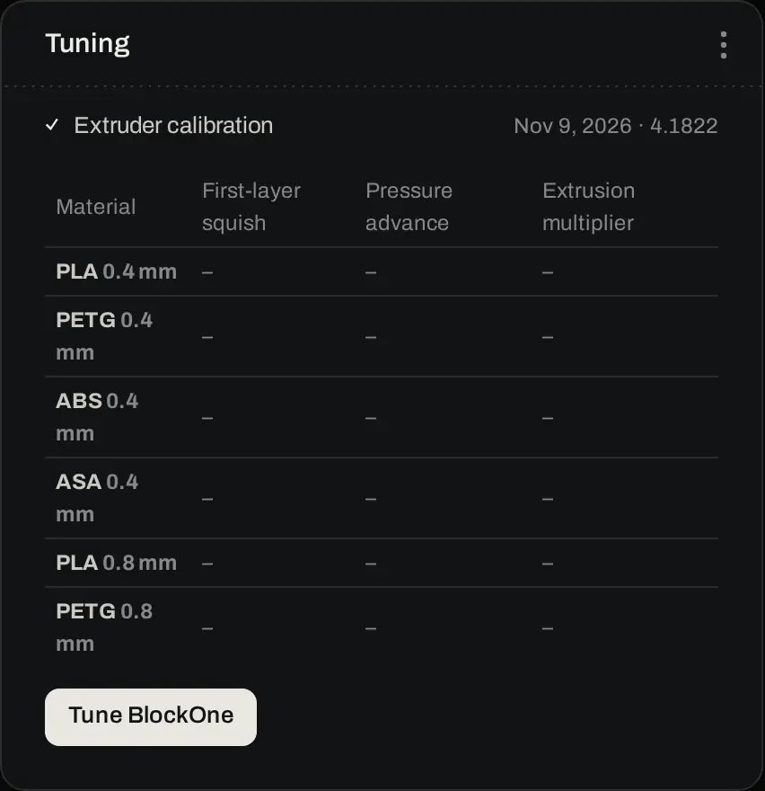
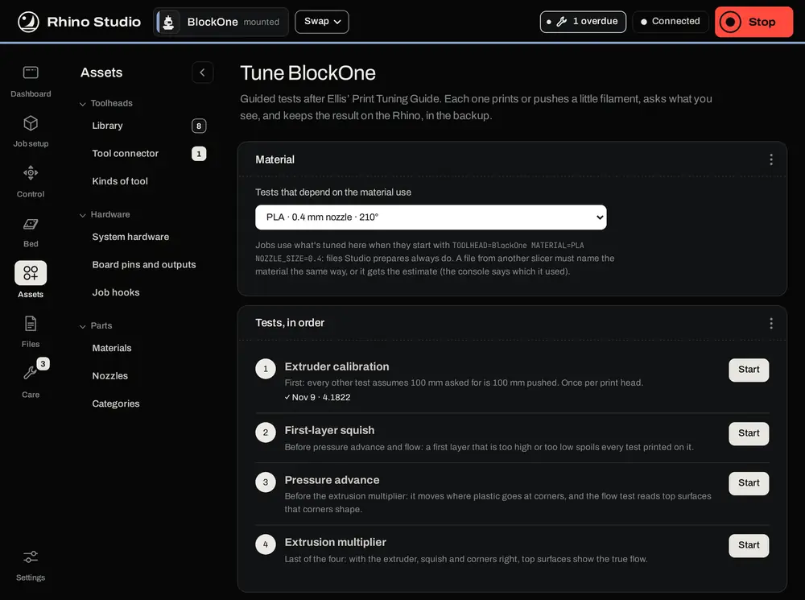
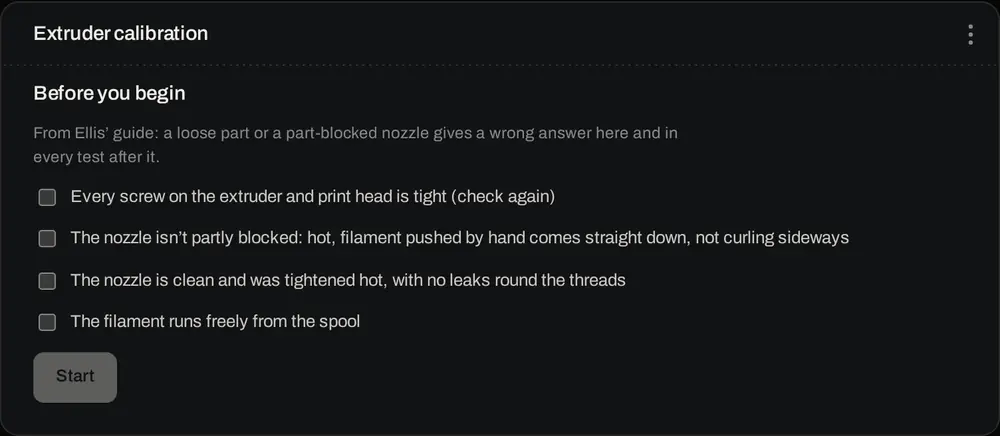
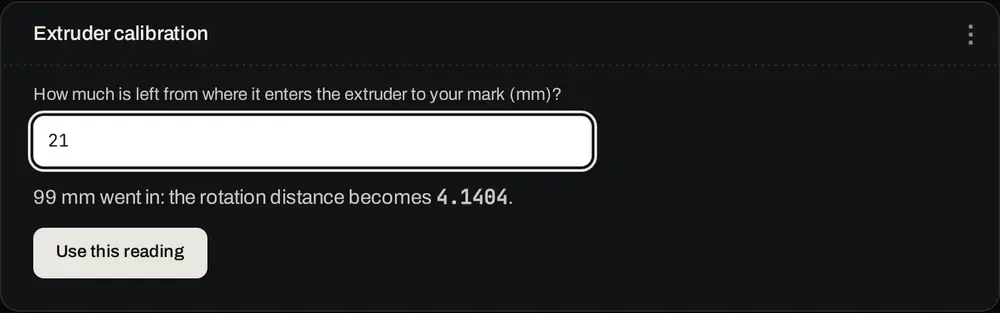
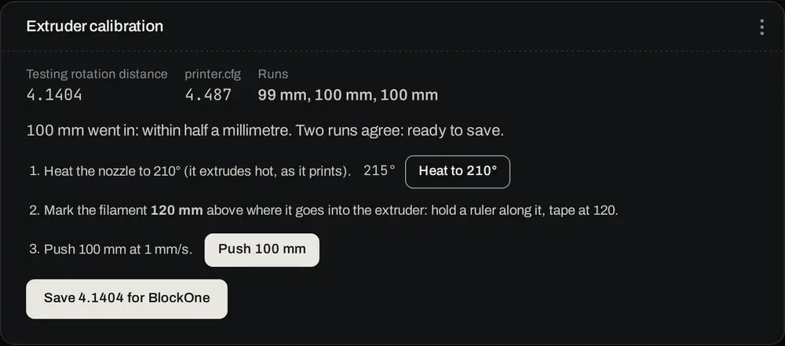
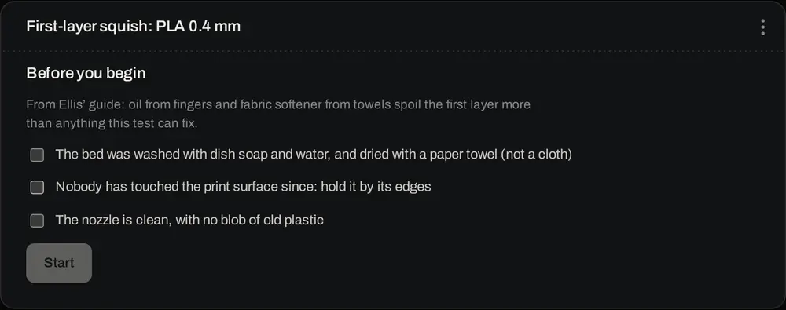
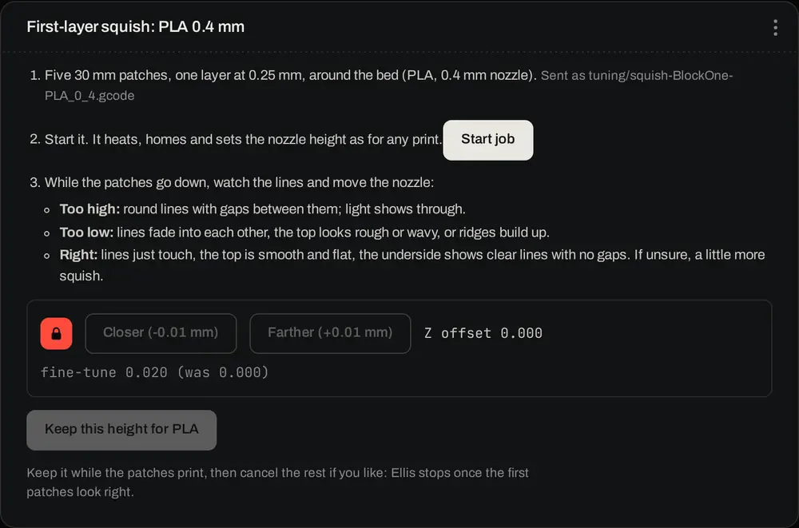
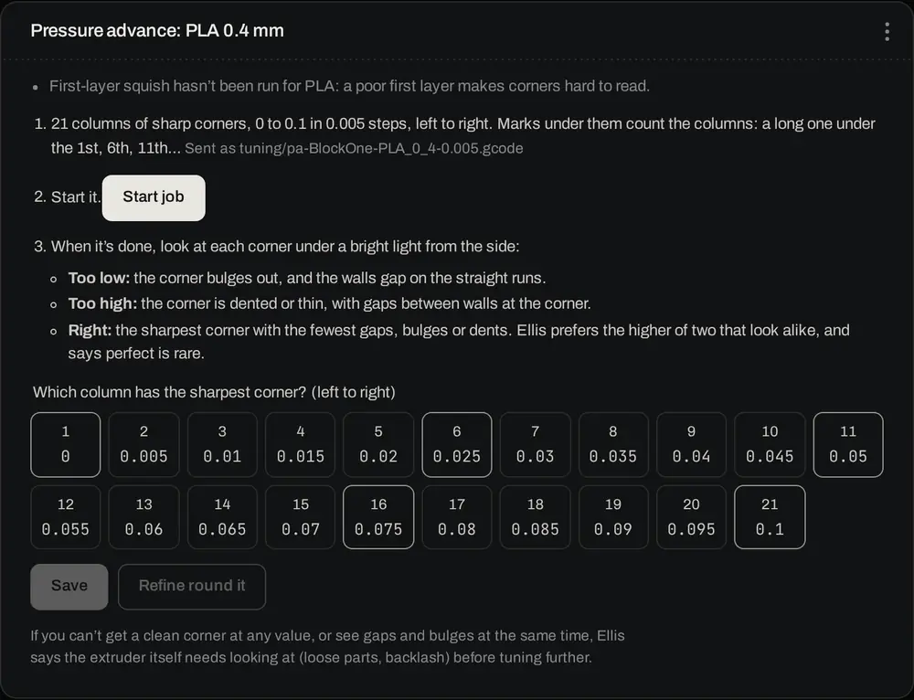
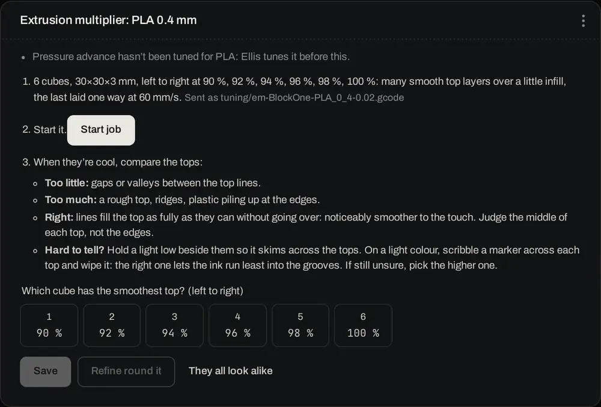

Rhino Studio has four guided tests for a print head, after Ellis' Print Tuning Guide. Each one pushes or prints a little filament, tells you what to look for, and keeps the result on the Rhino, where it is part of the backup. Klipper then applies the results at the start of every job, whichever slicer made the file.
Open Assets › Toolheads, select the print head and find its Tuning panel. It shows each test with a tick and the date it was last run, for each of the head's materials and nozzles. Press Tune BlockOne (the button carries the head's name) to open the tests.

The Tune page has two panels. Material picks the material and nozzle for the tests that depend on them, and shows the line a job file must start with to get these results: START_JOB TOOLHEAD=BlockOne MATERIAL=PLA NOZZLE_SIZE=0.4. Files Rhino Studio prepares always have it. Tests, in order lists the four tests; press Start beside one to run it on this page.

| Test | How often | What it sets | Kept on the Rhino as |
|---|---|---|---|
| Extruder calibration | Once per print head, and after any change to its extruder | Rotation distance | rhino_rd_<head> |
| First-layer squish | Per head and material | Nozzle height over the paper test | rhino_zfine_<head>_<material> |
| Pressure advance | Per head, material and nozzle | Pressure advance | rhino_pa_<head>_<material>_<nozzle> |
| Extrusion multiplier | Per head, material and nozzle | Flow (M221) | rhino_em_<head>_<material>_<nozzle> |
Run the tests in the order listed: each one assumes the ones before it are right, and a later test reminds you if an earlier one hasn't been run. Every test needs Klipper ready and the head mounted and confirmed. Run pressure advance and the extrusion multiplier again after changing the nozzle, the hotend or the brand of filament.
Checks that when Klipper asks for 100 mm of filament, 100 mm goes in. You need a ruler, a fine marker or a strip of tape, and about five minutes.
Press Start beside Extruder calibration. Tick each check under Before you begin once it's true, then press Start. A loose part or a part-blocked nozzle gives a wrong answer here and in every test after it.

Press Heat to 210° (the material's printing temperature). The filament is pushed hot, as it is when printing.
Mark the filament 120 mm above where it goes into the extruder: hold a ruler along it and put the tape or mark at 120.
Once the nozzle is hot, press Push 100 mm. Studio shows the commands and asks first. The filament goes in at 1 mm/s as two 50 mm moves, Klipper's limit for one move, and takes about 100 seconds.
Measure from where the filament enters the extruder to your mark, type it in and press Use this reading. Studio works out how much went in and the rotation distance that would have pushed exactly 100 mm.

Mark the filament again and push again. The next push uses the new value. When two runs in a row agree within half a millimetre, Studio says ready to save.
Press Save … for BlockOne. The panel shows the new value beside the old one.

Sets how far the nozzle is from the bed on the first layer, for this head and material. It fine-tunes the head's paper test, so run NOZZLE_HEIGHT_CALIBRATE from Control › Macros first if the head hasn't had one. Studio says so if it's missing.
Wash the bed with dish soap and water and dry it with a paper towel, not a cloth. Oil from fingers and fabric softener from towels spoil a first layer more than this test can fix. Tick the checks and press Start.

Press Make the test. Studio writes a small job, five 30 mm patches of one 0.25 mm layer spread around the bed, into the tuning folder on the Rhino. Press Start job: it heats, homes and sets the nozzle height as for any print.
While the patches go down, unlock the padlock (the panel turns red) and press Closer or Farther. Each press moves the nozzle 0.01 mm. Look at each new patch:
When a patch looks right, press Keep this height for PLA while the job is still printing. You can then cancel the rest of the print with Cancel the test print.

What is kept is the difference from the paper test, up to 1 mm either way. At every job start, Klipper adds it to the head's paper-test height for that material.
Pressure advance eases the extruder off before a corner and back on after it, so corners stay sharp.
Press Make the test, then Start job. The pattern is 21 columns of sharp corners, with pressure advance from 0 to 0.1 in steps of 0.005, left to right. Marks under the columns help you count: a long mark under the 1st, 6th, 11th, 16th and 21st.
When it's done, look at each corner under a bright light from the side.
Select that column's number. Press Save, or Refine round … to print 11 columns 0.002 apart around your pick, and pick again.

If no column gives a clean corner, or you see gaps and bulges in the same corner, check the extruder itself for loose parts and backlash before tuning further.
Sets the flow, so top surfaces fill fully without piling up.
Press Make the test, then Start job. It prints six 30 × 30 × 3 mm cubes. From left to right they print at 90, 92, 94, 96, 98 and 100 % flow.
When they're cool, compare the tops. Judge the middle of each top, not the edges.
Select that cube's number. Press Save, or Refine round … to print finer steps (0.5 %) around it. If all six look alike, press They all look alike for a wider spread, 86 to 106 %.

Hard to tell? Hold a light low beside the cubes so it skims across the tops. On a light colour, scribble a marker across each top and wipe it off: the right one lets the least ink run into the grooves. If you're still unsure, pick the higher one.
Every job starts with START_JOB, which sets up the extruder from scratch for the head, material and nozzle in the job file. Nothing carries over from the job before.
| Setting | When a result is kept | When there isn't one |
|---|---|---|
| Rotation distance | The head's result | printer.cfg's value |
| Nozzle height | Paper test plus the material's squish | The paper test alone |
| Pressure advance | The material and nozzle's result | An estimate from CALCULATE_PA |
| Flow | The material and nozzle's result | 100 % |
The console shows one line per job saying which values it used and where each came from: tuned, or printer.cfg. CALCULATE_PA runs just after START_JOB in every slicer profile. When the material has a tuned pressure advance it keeps that one and says (tuned); otherwise it estimates one from the Bowden length and the material.
The material name must match. A file from another slicer must call the material by the Rhino's name, such as PLA and not PLA+. If the slicer's name differs from the job's, a red console line says so and the job's material is used. If no head is mapped to the tool, CALCULATE_PA says so in red and leaves pressure advance as it is. A kept value outside its sane range (rotation distance 0.1–100, pressure advance 0–1, flow 50–150 %) is ignored and reported, and printer.cfg's value is used. Tune it again if you see that message.
Results saved before Tool Manager 1.9.17 were kept only in Studio. The Not on the Rhino yet panel on the Tune page lists them; press Store on the Rhino so Klipper uses them too.